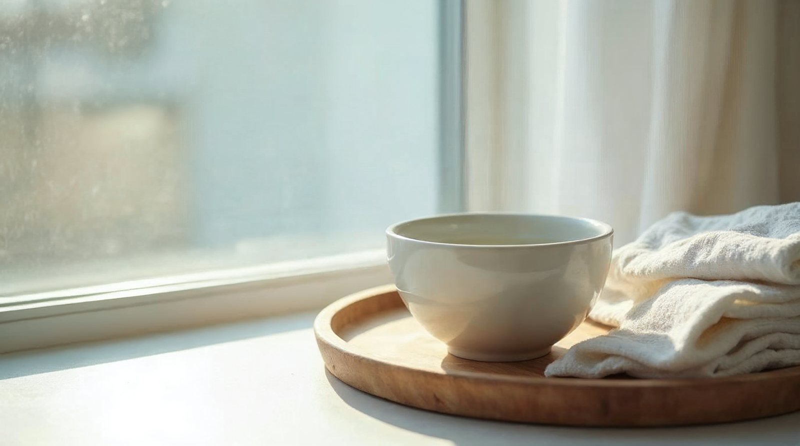
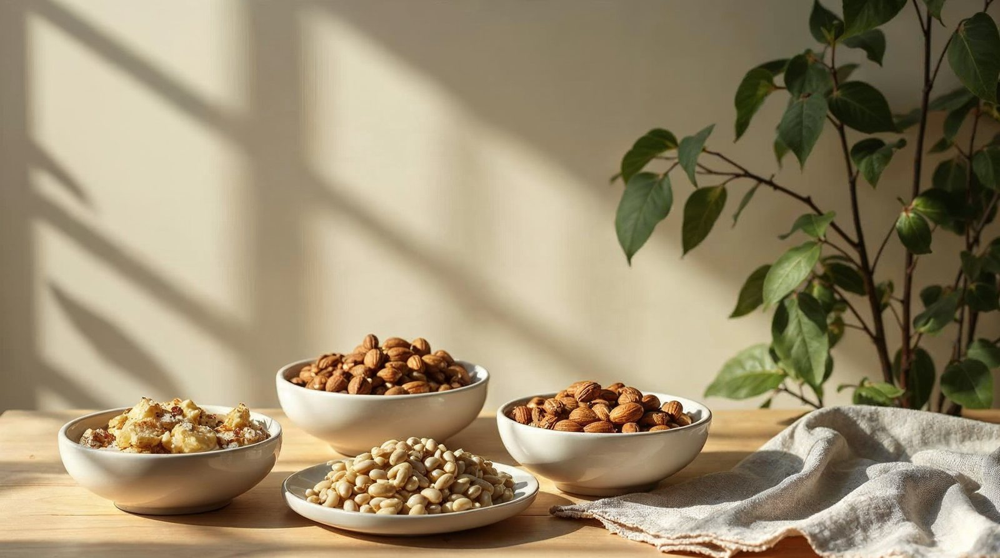
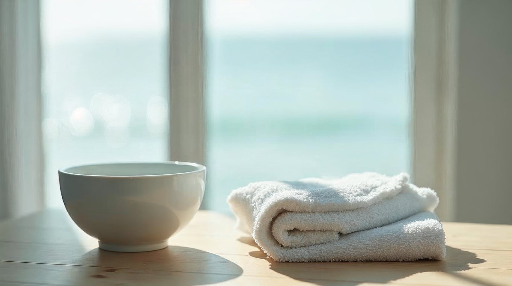
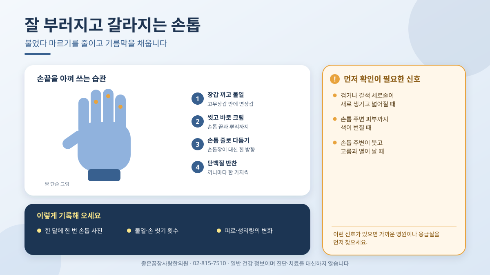

이종호 한의사 감수좋은꿈참사랑한의원 대표원장 (한의사 면허번호 19769)발행 2026-11-26 · 수정 2026-11-27
이 글의 차례
옷을 갈아입다가, 가방 지퍼를 열다가 손톱 끝이 툭 걸려 찢어집니다. 손톱깎이로 다듬으려 하면 끝이 종이처럼 겹겹이 벌어져 있고, 조금 기르려고 하면 또 금세 부러지죠. 예전엔 안 이랬는데 요즘 손톱이 왜 이렇게 약해졌을까 싶어 손끝을 자꾸 들여다보게 됩니다.
진료실에서 맥을 짚으려고 손목을 잡다 보면 손톱이 먼저 눈에 들어올 때가 있어요. 끝이 갈라진 손톱, 세로줄이 굵어진 손톱, 반달 모양이 흐려진 손톱을 보면 저는 "요즘 물일을 많이 하세요?", "식사는 잘 챙기세요?" 하고 여쭙거든요. 손톱은 작은 자리지만 생활의 흔적이 고스란히 남는 곳이에요.
그러니까 사실은 손톱이 약해지는 길이 두 갈래예요. 바깥에서 오는 것과 안에서 오는 것은 다른 얘기거든요. 대부분은 물과 세제, 건조한 공기처럼 바깥 자극 때문이에요. 하지만 식사가 부족하거나, 빈혈이 있거나, 갑상선 기능이 달라지거나, 나이가 들며 몸이 건조해질 때도 손톱이 먼저 신호를 보내곤 해요.
나이가 들며 손톱이 얇아지고 세로줄이 느는 건 원래 그래요. 겁내실 일은 아니에요. 다만 손톱만 보지 않고 생활과 몸 전체를 함께 살펴보는 게 제 방식이에요.
이 글에서는 약한 손톱이 어떤 모습인지, 왜 생기는지, 다른 손톱 변화와 어떻게 다른지, 그리고 진료실에서 무엇을 여쭙고 생활에서 무엇을 해 볼 수 있는지를 차례로 정리했습니다.
약한 손톱은 어떤 모습인가요
약한 손톱이라고 해도 모습은 조금씩 다릅니다. 가장 흔한 것은 손톱 끝이 종이처럼 여러 겹으로 벌어지며 벗겨지는 모습입니다. 손톱은 얇은 판이 여러 층으로 겹쳐진 구조인데, 이 층 사이가 벌어지면서 끝이 하얗게 들뜨고 쉽게 찢어집니다.
또 하나는 손톱이 세로 방향으로 쩍 갈라지는 모습입니다. 손톱 끝에서 시작해 안쪽으로 금이 가듯 갈라지고, 그 틈에 옷이나 머리카락이 걸려 더 벌어지곤 합니다. 손톱 표면에 세로줄이 굵고 거칠게 도드라지는 분도 계십니다.
손톱 전체가 얇고 말랑해져서 조금만 눌러도 휘거나, 끝이 쉽게 부러지는 경우도 있습니다. 손톱 주변 피부가 함께 거칠어지고 거스러미가 자주 생기기도 합니다. 손톱이 약해지면 손끝을 쓰는 일이 조심스러워지고, 작은 일에도 손톱이 걸려 아픈 순간이 늘어납니다.
왜 손톱이 약해질까요
가장 흔한 이유는 물과 건조가 번갈아 오는 것입니다. 손톱은 물에 닿으면 불었다가 마르면서 다시 줄어듭니다. 설거지, 손빨래, 잦은 손 씻기로 하루에도 여러 번 불었다 마르기를 반복하면, 손톱 층 사이가 조금씩 벌어지고 끝부터 들뜨게 됩니다.
세제, 손 소독제, 매니큐어 제거제 같은 화학 자극도 손톱의 기름기와 수분을 빼앗습니다. 젤네일을 자주 하고 갈아내는 과정에서 손톱 표면이 얇아지는 경우도 있습니다. 손톱으로 캔을 따거나 스티커를 떼는 습관처럼 손톱을 도구처럼 쓰는 것도 끝을 약하게 만듭니다.
몸 안의 변화도 손톱에 나타납니다. 식사량이 크게 줄었거나 단백질이 부족한 식사가 이어질 때, 철분이 부족해 빈혈이 있을 때, 갑상선 기능이 떨어지거나 올라갈 때, 갱년기 무렵 몸이 전체적으로 건조해질 때 손톱이 얇아지고 잘 부러진다고 말씀하시는 분이 많습니다.
한의학에서는 손톱을 혈이 넉넉한지 비추어 보는 자리로 여겨, 손톱이 얇고 윤기가 없으면 혈이 부족한 모습으로 설명해 왔습니다. 이것은 진단명이 아니라, 진찰할 때 식사와 피로, 생리와 잠, 피부와 머리카락의 건조함을 함께 살피기 위한 전통적인 표현입니다.

다른 손톱 변화와는 어떻게 다른가요
손톱에 나타나는 변화는 여러 가지라서, 약한 손톱과 헷갈리기 쉬운 것들을 나란히 놓아 보면 도움이 됩니다.
- 손발톱 무좀: 손톱이 두꺼워지고 노랗거나 하얗게 변하며, 손톱 밑에 부스러기가 쌓입니다. 발톱에서 먼저 시작되는 경우가 많습니다.
- 건선 손톱: 손톱 표면에 바늘로 찍은 듯한 작은 구멍이 생기거나, 손톱이 손톱 바닥에서 들뜹니다. 팔꿈치나 두피에 건선이 함께 있는 경우가 많습니다.
- 숟가락 모양 손톱: 손톱 가운데가 오목하게 꺼져 물방울이 고일 정도가 되면 철 결핍과 관련이 있을 수 있어 혈액검사를 권합니다.
- 나이에 따른 세로줄: 나이가 들면서 손톱에 가는 세로줄이 생기는 것은 흔한 변화로, 손톱이 갈라지지 않는다면 크게 걱정하지 않으셔도 됩니다.
약한 손톱은 '끝이 겹겹이 벗겨지거나 세로로 갈라지고' '얇아서 잘 부러지는' 모습이 중심입니다. 색이 변하거나 두꺼워지거나 손톱이 들뜬다면 다른 원인을 먼저 확인해 보시는 것이 좋습니다.
약한 손톱을 두고 자주 헷갈리는 것
첫째, 칼슘이 부족해서 그렇다는 생각입니다. 손톱은 주로 케라틴이라는 단백질로 이루어져 있어서, 칼슘보다는 단백질과 철분, 전체 식사량이 더 자주 거론됩니다. 영양제를 늘리기 전에 하루 식사가 고르게 이어지는지부터 살펴보시는 것이 좋습니다.
둘째, 손톱 영양제를 바르면 해결된다는 생각입니다. 바르는 제품이 표면을 보호하는 데 도움이 될 수는 있지만, 물일과 건조가 그대로라면 효과를 느끼기 어렵습니다. 손톱은 한 달에 3밀리미터 남짓 자라서, 새 손톱이 끝까지 자라 나오는 데 대여섯 달이 걸린다는 것도 기억해 주세요.
셋째, 손톱이 약하면 짧게만 깎으면 된다는 생각입니다. 짧게 다듬는 것은 도움이 되지만, 손톱깎이로 딱 끊으면 그 충격으로 층이 더 벌어질 수 있습니다. 끝은 결이 고운 손톱 줄로 한 방향으로 다듬는 쪽이 손톱에 부담이 적습니다.
생활의 시기에 따라 달라지는 손톱
겨울에는 공기가 건조하고 난방까지 더해져 손톱도 함께 마릅니다. 찬 바람에 손이 트고, 손을 녹이려 뜨거운 물에 자주 담그다 보면 손톱 끝이 더 잘 벌어집니다. 그래서 겨울에 유난히 손톱이 약해진다고 말씀하시는 분이 많습니다.
출산 뒤에는 아기 젖병을 씻고 기저귀를 갈며 손을 씻는 횟수가 크게 늘어납니다. 여기에 잠이 부족하고 식사를 제때 챙기기 어려운 시기가 겹치면서 손톱과 머리카락이 함께 약해졌다고 느끼시곤 합니다.
갱년기 무렵에는 피부와 눈, 입이 함께 건조해지면서 손톱도 얇아지고 잘 갈라지는 경우가 있습니다. 짧은 기간에 체중을 많이 줄이는 다이어트를 한 뒤에도 몇 달 지나 손톱이 약해진 것을 알아차리는 분이 계십니다. 손톱은 몇 달 전의 생활을 비추는 거울이라고 생각해 주시면 됩니다.
먼저 이렇게 여쭙니다
처음 오시면 저는 대략 이런 순서로 여쭙니다. 미리 생각해 오시면 이야기가 수월해집니다.
- 손톱이 약해진 것을 느낀 것은 언제부터인가요?
- 하루에 물일이나 손 씻기를 얼마나 하시고, 장갑을 쓰시나요?
- 네일 시술, 매니큐어 제거제, 손 소독제를 자주 쓰시나요?
- 최근 다이어트를 하셨거나 식사량이 줄었나요?
- 쉽게 피곤하거나 어지럽고, 추위를 많이 타시나요?
- 생리량이 많거나, 갱년기 무렵의 변화가 있으신가요?
머리카락이 많이 빠지거나 피부가 유난히 건조해졌는지, 입술이 자주 트는지도 함께 여쭙습니다. 손톱과 함께 다른 곳에도 변화가 있다면 몸 안의 이유를 조금 더 살펴볼 필요가 있기 때문입니다.
일상에서 먼저 해 볼 수 있는 것
약한 손톱 관리의 중심은 손톱이 불었다 마르기를 덜 반복하게 하고, 마른 뒤에는 기름막을 채워 주는 것입니다. 아래 습관 가운데 지금 할 수 있는 것부터 하나씩 해 보세요.
- 설거지와 청소는 고무장갑을 끼고, 장갑 안에 얇은 면장갑을 함께 끼기
- 손을 씻은 뒤에는 물기를 바로 닦고, 손톱과 손끝까지 크림 바르기
- 잠들기 전 손톱 뿌리와 끝에 오일이나 연고를 얇게 문질러 주기
- 손톱깎이 대신 결이 고운 손톱 줄로 한 방향으로 다듬기
- 손톱으로 캔을 따거나 스티커를 떼지 않고 도구 쓰기
- 매니큐어 제거제는 횟수를 줄이고, 젤네일은 쉬는 기간 두기
식사도 함께 살펴 주세요. 끼니마다 달걀, 두부, 생선, 살코기, 콩처럼 단백질 반찬을 한 가지씩 올리는 것부터 시작하시면 됩니다. 빈혈이 있다는 말을 들으셨다면 처방받은 철분제를 안내대로 이어 가시고, 식사로도 철분이 든 음식을 챙겨 주세요.
겨울에는 실내 습도를 조금 올리고, 바깥에 나갈 때 장갑을 끼는 것만으로도 손끝이 덜 마릅니다. 손톱이 갈라진 틈에 무언가 걸려 찢어질 것 같을 때는 손톱 줄로 살살 다듬어 두면 더 깊게 갈라지는 것을 줄일 수 있습니다.
변화를 느끼기까지는 시간이 걸립니다. 손톱 뿌리에서 새로 자라는 부분이 건강해지는지를 보려면 적어도 두세 달은 지켜보셔야 합니다. 한 달에 한 번 같은 조명에서 손톱 사진을 찍어 두시면 변화를 알아보기 쉽습니다.

병원 진료와는 어떻게 함께 가나요
손톱 색이 변하거나 두꺼워졌다면 피부과에서 무좀이나 건선 같은 원인이 없는지 확인해 보세요. 피곤하고 어지러우면서 손톱이 오목해졌다면 내과에서 혈액검사로 빈혈이나 갑상선 기능을 살펴보시는 것이 좋습니다. 처방받은 약은 처방한 선생님의 안내대로 이어 가셔야 합니다.
한의원 진료는 이런 진료를 대신하는 것이 아니라 나란히 갑니다. 병원에서 원인 확인과 치료를 챙기고, 한의원에서는 식사와 피로, 잠과 생리처럼 손톱과 함께 움직이는 몸 전체의 흐름을 살핀다고 생각해 주시면 됩니다.
한의원에서 함께 살필 수 있는 경우
- 손톱이 약해지면서 쉽게 지치고 손발이 찬 경우
- 출산 뒤나 갱년기 무렵 손톱과 피부, 머리카락이 함께 건조해진 경우
- 식사량이 줄거나 소화가 약해져 끼니를 자주 거르는 경우
- 생리량이 많아 피로와 어지럼이 함께 있는 경우
좋은꿈참사랑한의원에 오시면 먼저 아래 '먼저 확인이 필요한' 신호가 없는지부터 봅니다. 그다음 맥을 짚고, 손톱과 손끝, 혀와 얼굴빛을 살피며 식사와 소화, 잠, 생리의 흐름을 여쭙습니다. 혈액검사 결과가 있다면 함께 봅니다.
진찰한 내용을 바탕으로 생활에서 바꿔 볼 것 하나와 함께 침, 한약 상담 가운데 지금 상태에 맞는 것을 정합니다. 한약을 상의할 때는 드시는 약과 영양제를 모두 확인한 뒤 신중하게 정하고, 임신 중이시거나 임신 가능성이 있다면 먼저 알려 주시고 산부인과와도 상의해 주세요.
이렇게 기록해 오시면 상담이 쉬워집니다
손톱은 천천히 자라서 변화도 천천히 보입니다. 한두 달 정도 간단히 적어 보세요.
- 한 달에 한 번, 같은 조명에서 찍은 손톱 사진
- 하루 물일과 손 씻기 횟수, 장갑을 낀 날
- 손톱이 부러지거나 갈라진 날과 그때 하던 일
- 식사에서 단백질 반찬을 챙긴 끼니
- 피로, 어지럼, 생리량의 변화
- 바른 크림이나 오일, 드신 영양제
기록을 보면 손톱이 특히 약해지는 때와 생활 사이의 연결이 보이기 시작합니다. 그 연결이 바꿀 것을 정하는 실마리가 됩니다. 사진은 손등과 손톱 끝이 함께 보이게 찍어 주세요.

손끝을 아껴 쓰는 습관
손톱은 매일 쓰면서도 가장 덜 챙기게 되는 자리예요. 장갑 한 켤레, 손 씻은 뒤의 크림 한 번, 잠들기 전 오일 한 방울처럼 작은 습관이 몇 달 뒤 새로 자라 나온 손톱에 고스란히 나타나거든요. 손톱은 천천히 자라니까, 돌봄도 약하게, 오래, 매일이에요.
손톱이 자꾸 부러지면 손을 내보이기가 부끄럽다고 말씀하시는 분도 계세요. 그런데 그 손은 그만큼 집안일과 일터에서 부지런히 움직여 온 손이에요. 탓하기보다 조금 쉬게 해 준다는 마음으로 돌봐 주세요.
손톱 주변의 거스러미도 함께 챙겨 주세요. 거스러미를 손으로 뜯으면 손톱 뿌리 쪽 피부가 상하고, 그 자리에서 자라 나오는 손톱이 울퉁불퉁해질 수 있거든요. 작은 가위로 살짝 잘라 내고 크림을 발라 두시면 돼요.
몸 안쪽 사정을 살피는 건 제가 맡을게요. 대신 하나만 부탁드려요. 이번 주에는 설거지할 때 장갑을 끼는 것, 그거 하나만 지켜 보세요. 다음에 오시면 손톱 사진과 기록을 함께 펼쳐 놓고 다음 걸음을 정할게요.
이런 증상은 먼저 확인이 필요합니다
- 손톱에 검거나 갈색인 세로줄이 새로 생기고 점점 넓어지거나 주변 피부까지 번지는 경우
- 손톱 주변이 붉게 붓고 고름이 차며 욱신거리고 열이 나는 경우
이런 신호가 있으면 한의원보다 가까운 병원이나 응급실을 먼저 찾으세요.
함께 읽으면 좋은 글
- 물일을 하고 나면 손끝이 갈라지고 따가운 손 습진(주부습진)은 어떻게 살피나요?
- 빈혈이 있다는 말을 듣고 어지럽고 쉽게 지칠 때, 철분과 생활은 어떻게 살피나요?
- 갑상선 기능 저하나 항진이 있을 때 한의원 진료는 어떻게 함께 살피나요?
- 갱년기 무렵 눈·입·피부가 부쩍 건조해졌을 때는 무엇을 살피나요?
- 귀걸이·고무장갑·염색약이 닿은 자리가 붉고 가려운 접촉피부염은 어떻게 살피나요?

여쭙는 것
- 손톱이 약해진 것을 느낀 것은 언제부터인가요?
- 하루에 물일이나 손 씻기를 얼마나 하시고, 장갑을 쓰시나요?
- 네일 시술, 매니큐어 제거제, 손 소독제를 자주 쓰시나요?
생활에서 해 볼 것
- 설거지와 청소는 고무장갑을 끼고, 장갑 안에 얇은 면장갑을 함께 끼기
- 손을 씻은 뒤에는 물기를 바로 닦고, 손톱과 손끝까지 크림 바르기
- 잠들기 전 손톱 뿌리와 끝에 오일이나 연고를 얇게 문질러 주기
한의원에서 함께 살필 것
- 손톱이 약해지면서 쉽게 지치고 손발이 찬 경우
- 출산 뒤나 갱년기 무렵 손톱과 피부, 머리카락이 함께 건조해진 경우
- 식사량이 줄거나 소화가 약해져 끼니를 자주 거르는 경우
먼저 확인이 필요한 신호
- 손톱에 검거나 갈색인 세로줄이 새로 생기고 점점 넓어지거나 주변 피부까지 번지는 경우
- 손톱 주변이 붉게 붓고 고름이 차며 욱신거리고 열이 나는 경우
한눈에 보는 표
| 구분 | 핵심 |
|---|---|
| 여쭙는 것 | 손톱이 약해진 것을 느낀 것은 언제부터인가요? 하루에 물일이나 손 씻기를 얼마나 하시고, 장갑을 쓰시나요? |
| 생활에서 해 볼 것 | 설거지와 청소는 고무장갑을 끼고, 장갑 안에 얇은 면장갑을 함께 끼기 손을 씻은 뒤에는 물기를 바로 닦고, 손톱과 손끝까지 크림 바르기 |
| 한의원에서 함께 살필 것 | 손톱이 약해지면서 쉽게 지치고 손발이 찬 경우 출산 뒤나 갱년기 무렵 손톱과 피부, 머리카락이 함께 건조해진 경우 |
| 먼저 확인이 필요한 신호 | 손톱에 검거나 갈색인 세로줄이 새로 생기고 점점 넓어지거나 주변 피부까지 번지는 경우 손톱 주변이 붉게 붓고 고름이 차며 욱신거리고 열이 나는 경우 |
자주 묻는 질문
손톱이 약하면 칼슘을 먹어야 하나요?
손톱은 주로 단백질로 이루어져 있어서, 칼슘보다는 단백질과 철분, 전체 식사량을 먼저 살펴보는 경우가 많습니다. 영양제를 고르기 전에 식사를 먼저 돌아보시고, 드시는 영양제는 진료 때 함께 알려 주세요.
손톱이 좋아지는 데 얼마나 걸리나요?
손톱은 한 달에 3밀리미터 남짓 자라서, 새 손톱이 끝까지 자라 나오는 데 대여섯 달이 걸립니다. 뿌리 쪽부터 달라지는지 두세 달 정도 지켜보시길 권합니다.
젤네일을 계속해도 되나요?
제거하며 갈아내는 과정에서 손톱이 얇아질 수 있습니다. 손톱이 약해졌다면 한동안 쉬는 기간을 두고, 그동안 손톱 끝과 뿌리에 오일을 발라 주시는 편이 좋습니다.
손톱 세로줄은 걱정해야 하나요?
가늘고 고른 세로줄은 나이가 들며 흔히 생기는 변화입니다. 다만 검거나 갈색인 줄이 새로 생기고 넓어진다면 피부과에서 확인해 보세요.
좋은꿈참사랑한의원은 재진 때 지난번 이야기부터 이어서 여쭙니다. 진료시간과 예약은 오시는 길에서 확인하세요.
어디서 상담받을 수 있나요?
좋은꿈참사랑한의원은 서울 동작구 만양로2길 2 신성빌딩 3층·5층(서울 동작구 상도동, 7호선 상도역 3번 출구 근처)에 있습니다. 한의사 3명(이종호 대표원장, 조영기 수석진료원장, 정원영 진료원장)이 진료합니다. 진료시간은 평일 09:30~20:00(점심 13:00~14:00), 토·일·공휴일 09:30~15:00이며, 방문 전 전화로 확인을 권합니다. 예약은 네이버 예약, 카카오톡 상담, 전화 02-815-7510로 받습니다.
이 글은 일반적인 건강 정보이며 개인의 진단이나 치료를 대신하지 않습니다. 증상이 있거나 복용 중인 약이 있다면 진료를 통해 확인하세요. 치료 효과는 개인마다 다를 수 있습니다.
작성 기준: 일반적으로 알려져 있는 건강 정보를 참고해 정리했습니다(대표원장 감수). 증상 기록은 1~2주 동안 하루 1회, 비슷한 시간에 적어 오시면 지난 상태와 비교하기 쉽습니다.